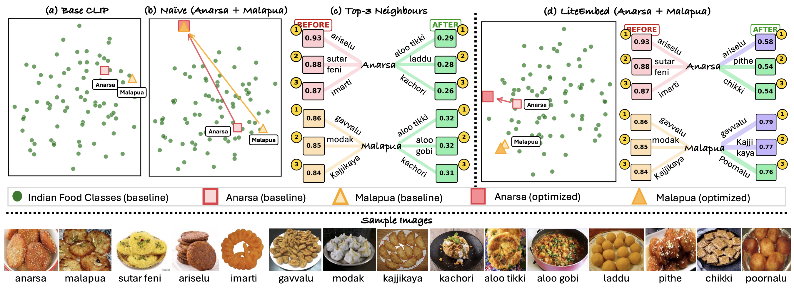
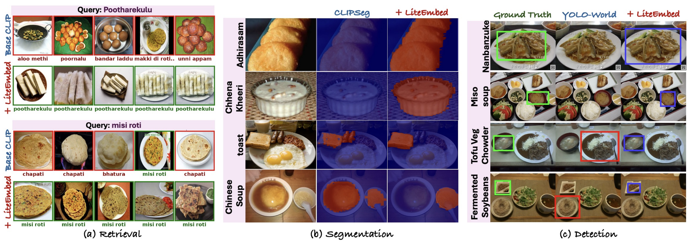
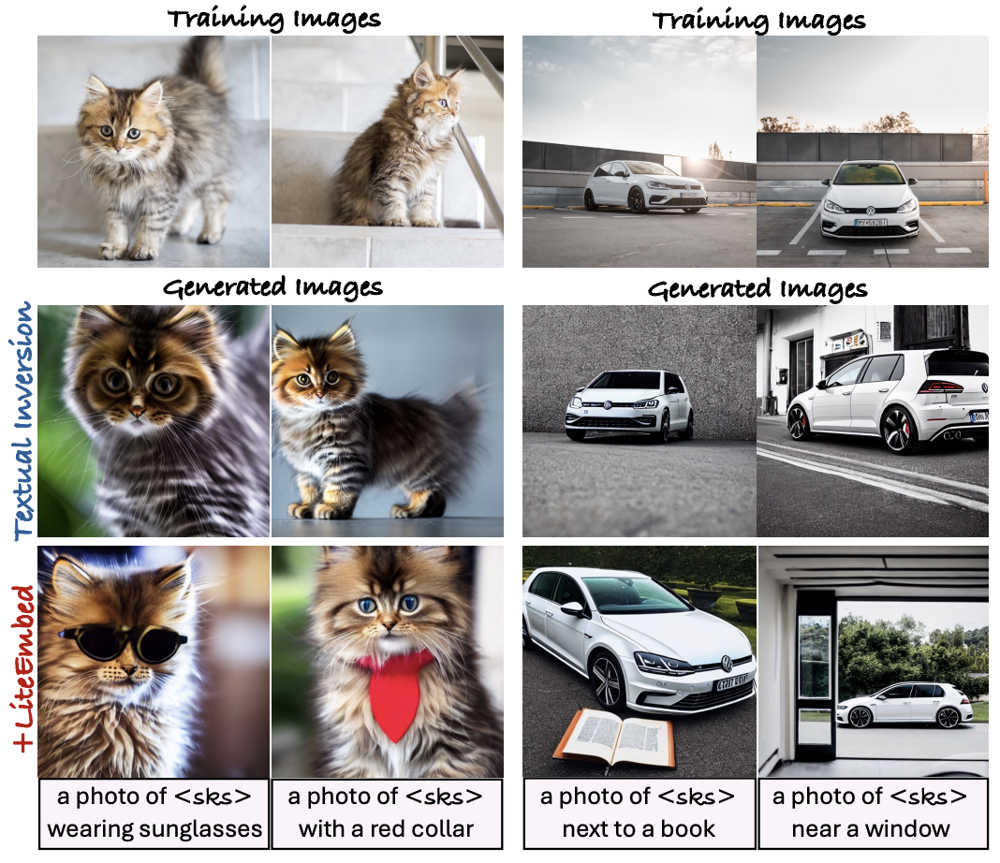

Large-scale vision–language models such as CLIP achieve strong zero-shot recognition but often struggle with rare or underrepresented classes that appear infrequently in pretraining data. We introduce LiteEmbed, a lightweight framework that adapts CLIP to such classes using only a few reference images. LiteEmbed optimizes a learnable text embedding using image–text alignment together with subspace-guided constraints derived from a PCA analysis of CLIP’s embedding space. These constraints preserve global semantic relationships while enabling fine-grained discrimination between visually similar categories.
LiteEmbed adapts CLIP to a new class by optimizing a learnable token embedding inserted into a standard CLIP text prompt. Starting from the original text representation, the embedding is updated using a small set of reference images. To avoid semantic drift and embedding collapse, we guide optimization using subspace constraints derived from the geometry of CLIP’s embedding space.

To better understand how CLIP organizes semantic concepts, we analyze its text embedding space using visualization and principal component analysis. Naïve optimization strategies can distort this structure, leading to collapsed embeddings and degraded discrimination. LiteEmbed explicitly preserves this geometry while enabling adaptation.


Because LiteEmbed modifies only the text embedding, the resulting representations can be used directly with existing CLIP-based systems without retraining. We demonstrate improvements across image retrieval, segmentation, detection, and text-to-image generation.


@article{agarwal2026liteembed,
title={LiteEmbed: Adapting CLIP to Rare Classes},
author={Agarwal, Aishwarya and Karanam, Srikrishna and Gandhi, Vineet},
journal={arXiv preprint arXiv:2601.09661},
year={2026}
}